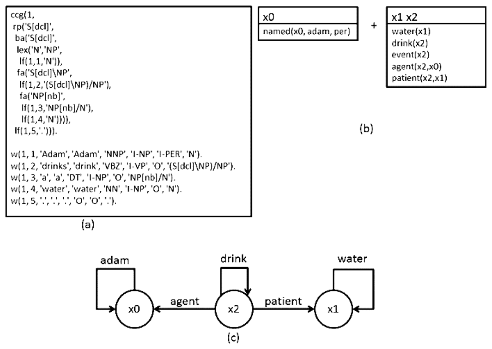
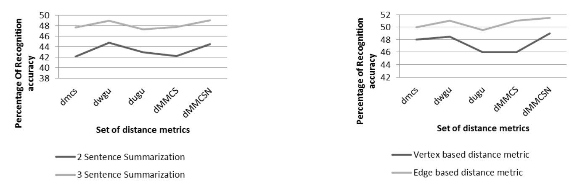

Turning news summaries into meaning graphs to sort them by topic
Most programs that sort documents by topic count words and ignore how the words connect. We asked whether a graph that records who did what to whom could do the job instead. We converted short summaries of Reuters news stories into graphs, tried five different ways of measuring how far apart two graphs are, and used them to sort the stories into 20 topics.
The problem
The usual method is called bag-of-words. It treats a document as a pile of words, counts them, and hands the counts to a learning algorithm. It works well, but it cannot tell "the dog bit the man" from "the man bit the dog". For tasks such as opinion mining, the paper points out, that loss of meaning matters.
A graph is a drawing made of dots (nodes) joined by lines (edges). It is a natural way to store meaning: the dots are things, the lines are the relations between them. The catch is cost. The standard way to compare two graphs is to find the biggest piece they share, called the maximum common subgraph. Finding it exactly is an NP-hard problem, which in practice means the running time explodes as the graphs grow.
From a sentence to a graph
We first shrank each document to its two or three most typical sentences, picked by how often their words occur in the topic. Smaller texts give smaller graphs, and smaller graphs keep the comparison affordable.
Then we used two existing tools, the C&C parser and Boxer, to read each sentence and write out a discourse representation structure. That is a list of the things mentioned (called referents) and the facts that hold between them (called conditions). For "He drinks water" the facts are: x1 is male, x2 is water, x3 is a drinking event, x1 is the agent of the event, and x2 is its patient. We turned this into a graph. Each referent became a node, a fact about two referents became a labelled edge, and a fact about one referent became a loop on its node.

Measuring the distance between two graphs
We used five distance formulas taken from earlier work on recognising objects in images. All of them rest on two quantities. One is the maximum common subgraph, the largest structure that appears in both graphs. The other is the minimum common supergraph, which is simply the two graphs laid on top of each other. The formulas compare their sizes, and each can count either nodes or edges, so we ended up with ten measures.
Because exact matching is too slow, we used an approximation. We ranked pairs of nodes, one from each graph, by how many matching loops they carry, then built the shared subgraph greedily from the best pairs. Finally, a k-nearest-neighbour classifier gave each test document the majority label of its k closest training documents.

What we found
We used 20 topics from the Reuters-21578 collection, with 10 documents per topic for training and 10 for testing, and tried k = 3, 5 and 7. The best graph result was 51.50% accuracy, from the edge-based version of the fifth distance with three-sentence summaries and k = 7 (Table 2). The lowest was 35.50% (Table 1). Bag-of-words, run on the same summaries, scored between 48.50% and 50.50% (Table 1, Table 2).
Two patterns stood out. The measures that counted edges did better than their node-counting twins, which fits the idea that the relations carry real information. And three-sentence summaries did better than two-sentence ones. The five distances behaved alike: averaged over k, their three-sentence edge-based accuracy was 49.43 ± 0.38%.
Topic by topic, the picture is mixed. For the gold topic, the F-measure (a single score that balances finding the right documents against picking wrong ones) rose from 0.25 with word counts to 0.71 with the best graph distance (Table 3). Words such as "ounces" and "carat" are rare, so counting overlooks them, while the graph ties them to "gold". For carcass it went the other way, 0.95 against 0.32, because "beef" and "pork" are enough on their own. Averaged over all topics the two methods tie at 0.51 (Table 3).
Results in more detail
Table 2 holds the numbers behind the headline. Each row is one of the five distance formulas, counted either on nodes (V) or on edges (E), and the last row is bag-of-words. The columns give k, the number of neighbours that vote on each test document. All of these runs use three-sentence summaries.
| Distance | k = 3 | k = 5 | k = 7 |
|---|---|---|---|
| V1 | 45.50% | 45.50% | 48.00% |
| E1 | 47.50% | 49.50% | 50.00% |
| V2 | 48.00% | 48.50% | 48.50% |
| E2 | 47.50% | 50.50% | 50.50% |
| V3 | 45.00% | 46.00% | 45.50% |
| E3 | 48.00% | 49.50% | 49.50% |
| V4 | 46.00% | 46.00% | 45.00% |
| E4 | 49.00% | 51.00% | 49.50% |
| V5 | 47.50% | 48.00% | 49.00% |
| E5 | 47.00% | 51.00% | 51.50% |
| bow | 49.50% | 49.50% | 49.00% |
Bag-of-words hardly changes with k: 49.50% at k = 3 and k = 5, and 49.00% at k = 7. The best graph row, E5, climbs from 47.00% at k = 3 to 51.50% at k = 7. Four of the five edge-based rows reach 50% or more for some k, while the highest node-based value is 49.00% (V5 at k = 7) (Table 2).
Two-sentence summaries give a different picture. There bag-of-words scores 50.50%, 50.00% and 48.50% for k = 3, 5 and 7, and the best graph values are 45.00%, 51.00% and 50.50% (Table 1). The two methods trade places depending on k, and on this small test set neither is clearly ahead.
For each of the five formulas, the paper also gives the three-sentence edge-based accuracy averaged over k: 49.00 ± 1.00%, 49.50 ± 1.41%, 49.00 ± 0.87%, 49.83 ± 0.85% and 49.83 ± 2.01%. Formulas 4 and 5 therefore have the same average.

To look at single topics we also computed recall (the share of a topic's documents that were found), precision (the share of the documents given a topic label that really belong to it) and the F-measure, which balances the two. We did this for bag-of-words and for the best graph distance, E5. Table 3 shows a selection of the 20 topics.
| Topic | Recall BoW | Recall graph | Precision BoW | Precision graph | F BoW | F graph |
|---|---|---|---|---|---|---|
| acq | 0.10 | 0.60 | 0.20 | 0.60 | 0.13 | 0.60 |
| alum | 0.50 | 0.30 | 1.00 | 0.38 | 0.67 | 0.33 |
| bop | 0.50 | 0.80 | 0.46 | 0.67 | 0.48 | 0.73 |
| carcass | 0.90 | 0.30 | 1.00 | 0.33 | 0.95 | 0.32 |
| cocoa | 0.60 | 0.60 | 0.86 | 0.86 | 0.71 | 0.71 |
| corn | 0.40 | 0.20 | 0.80 | 0.40 | 0.53 | 0.27 |
| cotton | 0.80 | 0.40 | 0.47 | 0.27 | 0.59 | 0.32 |
| dlr | 0.30 | 0.80 | 0.75 | 0.62 | 0.43 | 0.70 |
| earn | 0.40 | 0.80 | 1.00 | 0.89 | 0.57 | 0.84 |
| fuel | 0.30 | 0.50 | 0.19 | 0.39 | 0.23 | 0.44 |
| gold | 0.20 | 0.60 | 0.33 | 0.86 | 0.25 | 0.71 |
| ipi | 0.90 | 0.80 | 0.75 | 0.80 | 0.82 | 0.80 |
| Average | 0.51 | 0.52 | 0.60 | 0.54 | 0.51 | 0.51 |
On the F-measure the graph is ahead on acq, bop, dlr, earn, fuel and gold, bag-of-words is ahead on alum, carcass, corn and cotton, and the two are equal on cocoa (Table 3). For acq, bag-of-words found only 0.10 of the documents, against 0.60 for the graph (Table 3). Over all 20 topics the F-measure averages 0.51 for both methods, and the paper notes that the graph distance sometimes gives clearly better results than bag-of-words (Table 3).
Discussion
We read these results as saying that the graph approach is nearly equivalent to word counting on this task, and in some cases does better. The edge-based results are the part we find most telling. Edges carry the labels, such as agent and patient, that say who did what to whom. When edge-based measures beat their node-based twins, the relations must be adding information. We conclude that semantic information is essential for text categorisation, and that the results are a good sign that it is adequate for representing texts.
The topics where one method wins show how. The word "gold" also turns up in the copper and alum topics, "reserves" occurs in many topics, and "ounces" and "carat" are too rare for word counting to notice. The graph ties these words together in a way that is specific to the gold topic. In the carcass topic, plain words such as "beef" and "pork" are enough to identify it, and the extra structure has little to add.
The paper's open points are short. Finding the exact common subgraph is NP-hard, so we shortened every document to two or three sentences and used an approximate matching that stays within polynomial time. Each topic had only 10 test documents. We have not yet measured how much the summarising step helps or hurts, and that is the first item of future work. We also want to try other learners, such as a multi-layer perceptron and support vector machines with a graph kernel.
A companion paper mixed these graph measures with word counts, and the combination gave better accuracy than either alone.
Sources
The figures and tables listed here are taken from the paper cited at the top of this page; the numbers quoted in the text come from it too.
- Figures: Fig. 2, Fig. 1, Fig. 4 and Fig. 5
- Tables: Table 1: accuracy for each distance and bag-of-words with two-sentence summaries; Table 2: accuracy for each distance and bag-of-words with three-sentence summaries; Table 3: recall, precision and F-measure per topic, bag-of-words against the best graph distance
Acknowledgements
This work was funded by Emma in the framework of the EU Erasmus Mundus Action 2.
Cite the paper
N Das, Swarnendu Ghosh, T Gonçalves, P Quaresma (2014). Comparison of different graph distance metrics for semantic text based classification. Polibits, Vol. 49.
@article{das2014comparison,
author = {Das, N and Ghosh, Swarnendu and Gon{\c c}alves, T and Quaresma, P},
title = {Comparison of different graph distance metrics for semantic text based classification},
journal = {Polibits},
volume = {49},
year = {2014},
doi = {10.17562/pb-49-6}
}